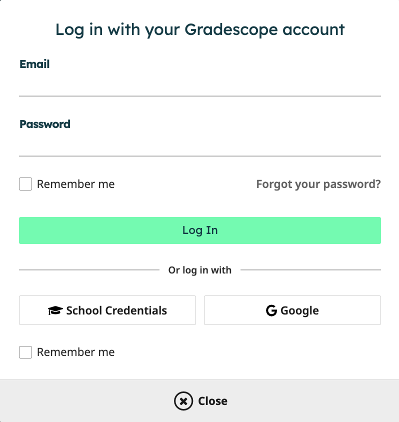
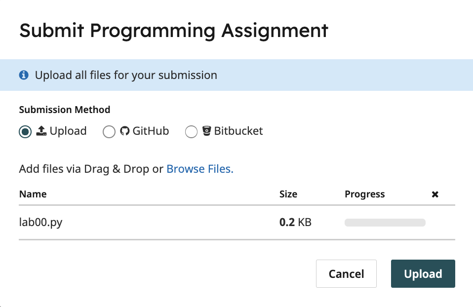
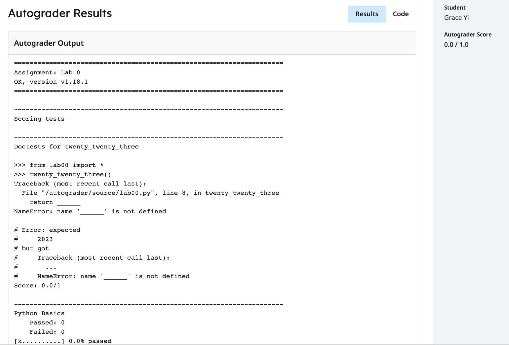

Lab 0: Getting Started
Due by 11:59pm on Tuesday, June 23.
Starter Files
Download lab00.zip.
This lab is required for all students.
Attendance
You need to submit the lab problems in addition to attending to get credit for lab.
If you miss lab for a good reason (such as sickness or a scheduling conflict) or you don't get checked in for some reason, email cs61a@berkeley.edu within one week to receive attendance credit.
Introduction
This lab explains how to setup your computer to complete assignments and introduces some of the basics of Python. If you need any help, please post on Ed or ask for help at your assigned lab section.
Here's an outline of the lab:
Setup: Setting up the essential software for the course. This will require several components, listed below.
- Install a Terminal: Install a terminal so you can interact with files in this course and run OK commands.
- Install Python 3: Install Python version 3.8 or later (ideally Python 3.11 or later) on your computer.
- Install a Text Editor: Install software to edit
.pyfiles for this course. Almost all students use VS Code.
- Review: Your Computer's File System This is an overview of how your computer's file system works, including the meaning of both absolute and relative file paths.
- Walkthrough: Using the Terminal: This walks you through how to use the terminal and Python interpreter.
- Walkthrough: Organizing your Files: This section walks you through how to use your terminal to organize and navigate files for this course. Everyone should read this section.
- Required: Doing the Assignment: You must complete this section to get credit for the assignment. The main goal of this part is to give you practice using our software.
- Required: Submitting the Assignment: Turn in your work.
- Appendix: Useful Python Command Line Options: These are commands that are useful in debugging your work, but not required to complete the lab. We include them because they are likely to be helpful to you throughout the course.
Setup
To setup your device, select the guide that corresponds to your operating system.
Your First Assignment
When working on assignments, ensure that your terminal's working directory is correct (which is likely where you unzipped the assignment).
1) What Would Python Do? (WWPD)
One component of lab assignments is to predict how the Python interpreter will behave. We call these questions "What Would Python Do?"
In this class, we use a program called ok to assess your knowledge.
ok will be included with every assignment. Let's go through
how to do a WWPD question with ok.
Open your terminal, and make sure you are in the lab00 directory that contains
the unzipped lab files for this assignment. In that directory, type ls to verify
that there are the following files:
lab00.py: the starter file for this labok: our testing programlab00.ok: a configuration file forok
If you don't see these files, use cd to navigate to the correct directory.
Attempting to run
okin a directory that does not haveokwill produce an error.
Enter the following in your terminal, which will run ok and begin this section:
python3 ok -q python-basics -uThe command
python3 ok -q python-basics -utells the Python interpreter to run the file with the nameokin the current working directory.-q python-basics -uare inputs provided to theokprogram that identify which question to run.As stated in the setup section, if the
python3command does not work, please try usingpythonorpy.
You will be prompted to enter the output of various statements/expressions. You must enter them correctly to move on, but there is no penalty for incorrect answers.
The first time you run Ok, you will be prompted for your bCourses email. Please follow these directions.
>>> x = 20
>>> x + 2
______22
>>> x
______20
>>> y = 5
>>> y = y + 3
>>> y * 2
______16
>>> y + x
______282) Implementing Functions
Open the entire lab00 folder in VS Code. You can drag the folder onto the VS
Code application or open VS Code and use Open Folder... in the File menu.
Once you open the lab00 folder, you'll see the lab00.py file in the file
explorer on the left panel of your VS Code window. Click it to start editing
lab00.py, which is the file you will submit to receive credit for the lab.
Important: Turn on Auto Save in the File menu of VS Code. Then, whenever
you change a file, the contents will be saved. If you don't enable Auto Save,
be sure to frequently save your work.
Recommended: Use the terminal inside VS Code (Terminal > New Terminal in
the menu). If you opened the assignment folder in VS Code as instructed above,
then the VS Code terminal's working directory will automatically be set to the
assignment folder, which means you won't have to change directories to check
your work.
Now complete the lab. You should see a function called twenty_twenty_six that
has a blank return statement. That blank is the only part you should change.
Replace it with an expression that evaluates to 2026. What's the most creative
expression you can come up with?
3) Running Tests
We'll also use ok to test your code. Switch to the terminal. Make sure you are in the lab00 directory that contains
ok and lab00.py.
Pro tip: If you opened the
lab00folder in VS Code and selectNew Terminalin theTerminalmenu of VS Code, then the terminal will automatically be in thelab00directory.
Now, run ok with this command to test your code:
python3 okRemember, if you are using Windows and the
python3command does not work, please try using justpythonorpy.
If you wrote your code correctly and you finished unlocking your tests, you should see a successful test:
=====================================================================
Assignment: Lab 0
=====================================================================
~~~~~~~~~~~~~~~~~~~~~~~~~~~~~~~~~~~~~~~~~~~~~~~~~~~~~~~~~~~~~~~~~~~~~
Running tests
---------------------------------------------------------------------
Test summary
2 test cases passed! No cases failed.If you didn't pass the tests, ok will instead show you something like this:
---------------------------------------------------------------------
Doctests for twenty_twenty_six
>>> from lab00 import *
>>> twenty_twenty_six()
0
# Error: expected
# 2026
# but got
# 0
---------------------------------------------------------------------
Test summary
0 test cases passed before encountering first failed test caseFix your code in your text editor until the test passes.
Every time you run
ok,okwill try to back up your work. Don't worry if it says that the "Connection timed out" or that you're not enrolled in the course. You can still submit this assignment and get credit.
4) Pre-Semester Survey
As part of this assignment, fill out the Pre-Semester Survey form.
Once you finish the survey, you will be presented with a passphrase. Put
this passphrase, as a string, on the line that says
passphrase = 'REPLACE_THIS_WITH_PASSPHRASE' in the Python file for this assignment.
E.g. if the passphrase is abc, then the line should be passphrase = 'abc'.
Use Ok to test your code:
python3 ok -q presem_surveyCheck Your Score Locally
You can locally check your score on each question of this assignment by running
python3 ok --scoreThis does NOT submit the assignment! When you are satisfied with your score, submit the assignment to Gradescope to receive credit for it.
Submitting the Assignment
Now that you have completed your first assignment, it is time to turn it in. You can follow these next steps to submit your work and get points.
Important: You only need to submit to Gradescope; you do not need to submit to Ok.
Submit with Gradescope
Log in with School Credentials using your CalNet ID to Gradescope. You’ll be taken to your Dashboard as soon as you log in.


- On your Dashboard, select this course. (You should have already been added to Gradescope. If this is not the case, please make a private Ed post.) This will take you to the list of assignments in the course that you are able to submit. On this list, you will see the status of the assignment, the release date, and the due date.
- Click on the assignment Lab 0 to open it.
When the dialog box appears, click on the gray area that says Drag & Drop. This will open your file finder and you should select your code file
lab00.pythat you edited for this assignment.
Once you have chosen your file select the Upload button. When your upload is successful, you’ll see a confirmation message on your screen and you will receive an email.

Next, wait a few minutes for the autograder to grade your code file. Your final score will appear at the right and your output should be the same as the one you tested locally. You can check the code that you submitted at the top right where there is a tab labeled Code. If there are any errors, you can edit your
lab00.pycode and click Resubmit at the bottom of your screen to resubmit your code file. Assignments can be resubmitted as many times as you would like before the deadline.
Your responses to WWPD questions are not submitted to Gradescope, and they do not need to be. Lab credit is based on code writing questions.
Congratulations, you just submitted your first assignment!
Appendix: Useful Python Command Line Options
ls: lists all files in the current directorycd <path to directory>: change into the specified directorymkdir <directory name>: makes a new directory with the given name
Here are the most common ways to run Python on a file.
Using no command-line options will run the code in the file you provide and return you to the command line. If your file just contains function definitions, you'll see no output unless there is a syntax error.
python3 lab00.py-i: The-ioption runs the code in the file you provide, then opens an interactive session (with a>>>prompt). You can then evaluate expressions such as calling functions you defined. To exit, typeexit(). You can also use the keyboard shortcutCtrl-Don Linux/Mac machines orCtrl-Z Enteron Windows.If you edit the Python file while running it interactively, you will need to exit and restart the interpreter in order for those changes to take effect.
Here's how we can run
lab00.pyinteractively:python3 -i lab00.py-m doctest: Runs the doctests in a file, which are the examples in the docstrings of functions.Each test in the file consists of
>>>followed by some Python code and the expected output.Here's how we can run the doctests in
lab00.py:python3 -m doctest lab00.pyWhen our code passes all of the doctests, no output is displayed. Otherwise, information about the tests that failed will be displayed.